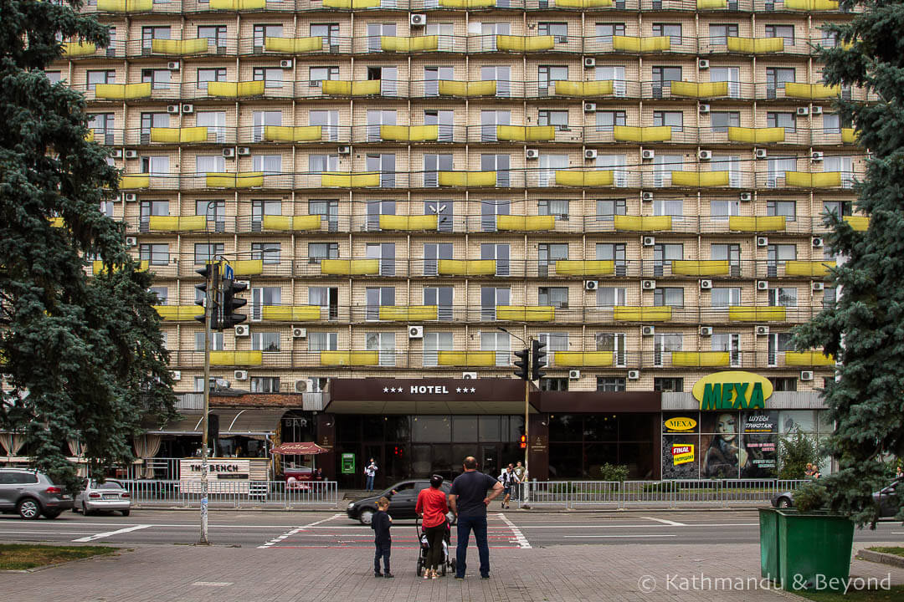
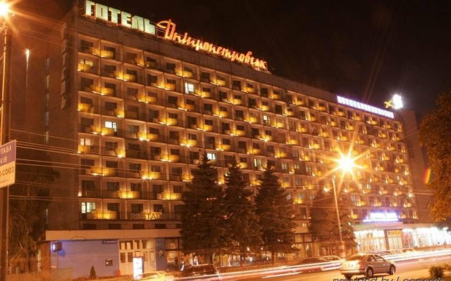
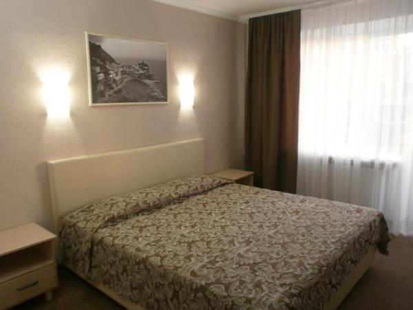

Этот отель находится в Днепропетровске, в 1 минуте ходьбы от Днепра. К услугам гостей круглосуточная стойка регистрации и частная парковка. Парк имени Тараса Шевченко расположен в 1,5 км. Номера отеля "Днепропетровск" оформлены в классическом стиле. В каждом номере подключено кабельное телевидение и есть балкон и холодильник. Собственные ванные комнаты оборудованы ванной и укомплектованы бесплатными туалетно-косметическими принадлежностями. Гости могут отведать блюда европейской и украинской кухни в ресторанах отеля или отдохнуть в баре. Автобусная остановка "Улица Набережная" находится в 20 метрах от отеля. До железнодорожного вокзала Днепропетровска – 3 км. По запросу для гостей организуется трансфер до международного аэропорта Днепропетровска (18 км). Это любимая часть города Днепр среди наших гостей согласно независимым отзывам.
Hotel Dnipropetrovsk


